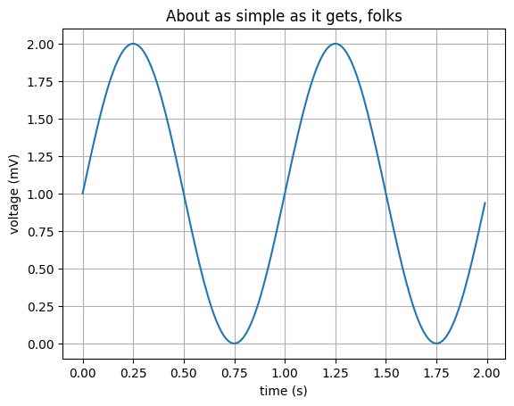

MYST_NB_TEST_BED2
…
#### import myst_nb as mnb
import matplotlib.pyplot as plt
import numpy as np
import myst_nb as mnb
import pandas as pd
x = np.linspace(0, 10, 200)
y = np.sin(x)
fig, ax = plt.subplots()
ax.plot(x, y, 'b-', linewidth=2)
fig.set_size_inches(0.6, 0.2)
fig.set_facecolor('white')
fig.set_edgecolor('white')
ax.set_xticks([])
ax.set_yticks([])
ax.set_axis_off()
# mnb.glue("glued_fig", fig, display=False)
# temp = ''
plt.show()
import matplotlib.pyplot as plt
import numpy as np
# Data for plotting
t = np.arange(0.0, 2.0, 0.01)
s = 1 + np.sin(2 * np.pi * t)
fig, ax = plt.subplots()
ax.plot(t, s)
ax.set(xlabel='time (s)', ylabel='voltage (mV)',
title='About as simple as it gets, folks')
ax.grid()
fig.savefig("test.png")
plt.show()

import itertools
from collections import Counter
from random import random
from decimal import *
from numbers import Number
def KLHfloatround(myfloat, my10power):
return float(
Decimal(round(myfloat, my10power)).quantize(Decimal(str(10**-my10power)))
)
def interval_compare_X(bracket_number1, bracket_number2, interval_type):
"""Given an Excel cell, filter the numeric value, retaining only if within the interval
Args:
bracket_number1: one extreme value in the interval (*)
bracket_number2: the other extreme value in the interval (*)
interval_type: type of interval closure (closed/open and combinations)
number_entry: a single Excel cell to be filtered
sortQ: a boolean, True indicates an ascending sort
reverseQ: a boolean, True indicates sorted descending
unique_onlyQ: a boolean, indicates removal of duplicates
(*) or in ["minf", "pinf", "-inf", "inf"]
Returns:
List of values meeting the comparison specification, if any. Otherwise, the string 'empty'
Raises:
ValueError("Expected 2 numeric values and string interval_type")
"""
b1, b2 = min(bracket_number1, bracket_number2), max(bracket_number1, bracket_number2)
b1_ok, b2_ok = False, False
if isinstance(b1, str):
b1 = bracket_inf(b1)
if not b1:
input_check = False
# print("ValueError('bracket1 must be numeric")
raise ValueError('bracket1 must be numeric or in ["minf", "pinf", "-inf", "inf"]')
else:
b1_ok =True
if isinstance(b2, str):
b2 = bracket_inf(b2)
if not b2:
# print("ValueError('bracket2 must be numeric")
raise ValueError('bracket2 must be numeric or in ["minf", "pinf", "-inf", "inf"]')
else:
b2_ok =True
if not ((isinstance(b1, Number) or b1_ok)
and (isinstance(b2, Number) or b2_ok)
and isinstance(interval_type, str)):
# print("ValueError('Expected ...")
raise ValueError("Expected 2 numeric values (*) and string interval_type")
ivupper = interval_type.upper()
if not(ivupper in ['[]','[)','(]','()','CC','CO','OC','OO']):
raise ValueError("Interval_type must be \n['[]','[)','(]','()','CC','CO','OC','OO']")
if ivupper in ['[]','CC']:
def CC(x):
if (b1 < x < b2):
return x
else:
return None
return CC
elif ivupper in ['[)','CO']:
def CO(x):
if (b1 < x <= b2):
return x
else:
return None
return CO
elif ivupper in ['(]','OC']:
def OC(x):
if (b1 <= x < b2):
return x
else:
return None
return OC
elif ivupper in ['()','OO']:
def OO(x):
if (b1 <= x <= b2):
return x
else:
return None
return OO
def interval_compare_X(bracket_number1, bracket_number2, interval_type):
"""Given an Excel cell, filter the numeric value, retaining only if within the interval
Args:
bracket_number1: one extreme value in the interval (*)
bracket_number2: the other extreme value in the interval (*)
interval_type: type of interval closure (closed/open and combinations)
number_entry: a single Excel cell to be filtered
sortQ: a boolean, True indicates an ascending sort
reverseQ: a boolean, True indicates sorted descending
unique_onlyQ: a boolean, indicates removal of duplicates
(*) or in ["minf", "pinf", "-inf", "inf"]
Returns:
List of values meeting the comparison specification, if any. Otherwise, the string 'empty'
Raises:
ValueError("Expected 2 numeric values and string interval_type")
"""
b1, b2 = min(bracket_number1, bracket_number2), max(bracket_number1, bracket_number2)
b1_ok, b2_ok = False, False
if isinstance(b1, str):
b1 = bracket_inf(b1)
if not b1:
input_check = False
# print("ValueError('bracket1 must be numeric")
raise ValueError('bracket1 must be numeric or in ["minf", "pinf", "-inf", "inf"]')
else:
b1_ok =True
if isinstance(b2, str):
b2 = bracket_inf(b2)
if not b2:
# print("ValueError('bracket2 must be numeric")
raise ValueError('bracket2 must be numeric or in ["minf", "pinf", "-inf", "inf"]')
else:
b2_ok =True
if not ((isinstance(b1, Number) or b1_ok)
and (isinstance(b2, Number) or b2_ok)
and isinstance(interval_type, str)):
# print("ValueError('Expected ...")
raise ValueError("Expected 2 numeric values (*) and string interval_type")
ivupper = interval_type.upper()
if not(ivupper in ['[]','[)','(]','()','CC','CO','OC','OO']):
raise ValueError("Interval_type must be \n['[]','[)','(]','()','CC','CO','OC','OO']")
if ivupper in ['[]','CC']:
def CC(x):
if (b1 < x < b2):
return x
else:
return None
return CC
elif ivupper in ['[)','CO']:
def CO(x):
if (b1 < x <= b2):
return x
else:
return None
return CO
elif ivupper in ['(]','OC']:
def OC(x):
if (b1 <= x < b2):
return x
else:
return None
return OC
elif ivupper in ['()','OO']:
def OO(x):
if (b1 <= x <= b2):
return x
else:
return None
return OO
def filter_int_comp_list_X(bracket_number1, bracket_number2, interval_type, number_entry_list, sortQ=False, reverseQ=False, unique_onlyQ=False):
"""Given an Excel range, filter the numeric values, retaining only those that are within the interval
Args:
bracket_number1: one extreme value in the interval
bracket_number2: the other extreme value in the interval
interval_type: type of interval closure (closed/open and combinations)
number_entry_list: a LIST of values to be filtered
sortQ: a boolean, True indicates sorted ascending
reverseQ: a boolean, True indicates sorted descending
unique_onlyQ: a boolean, indicates removal of duplicates
Returns:
List of values meeting the comparison specification, if any. Otherwise, the string 'empty'
Raises:
string 'Error in multiple range input': If the function fails.
"""
ret = []
icx=interval_compare_X(bracket_number1, bracket_number2, interval_type)
# rg_flattened = itertools.chain.from_iterable(number_entry_range)
# for e in number_entry_list:
# e_value = None
# if e == '' or e is None:
# # no conversion
# e_value = ''
# else:
# try:
# e_value = e.Value
# except:
# e_value = e
# if type(e_value) == float:
# comparison = icx(e_value)
# if comparison:
# ret.append(e_value)
# ret = [icx(x) for x in number_entry_list]
ret = [y for x in number_entry_list for y in [icx(x)] if y is not None]
if unique_onlyQ:
ret = list(set(ret))
if sortQ:
ret.sort()
if reverseQ:
ret.reverse()
if len(ret) == 0:
return 0
else:
return ret
def mix_func(x):
"""Return a list of x random values
Args:
x: integer number of values to produce
Returns:
an x-length list of random numbers
Raises:
zero, if x == 0
"Function error" if function fails
Disclosure:
Lifted from Page 56 of https://www.pyxll.com/docs/pyxll-5.5.4.pdf
"""
try:
if x == 0:
# return as a number to Excel
return 0
# return a list of values as an 'object'
array = [random() for i in range(x)]
return array
except:
return "Function error"
def stats_X(x, n, decimal_places=3):
"""Return a list of lists counting and comparing number of runs with each possible length
:param x: integer number of values per run
:param n: integer number of runs
:param decimal_places: decimal places in ratio result
Returns:
a 3-column by x-row range
column 1: possible values of counter function
column 2: count of runs for each possible value
column 3: ratio of specific count of runs to total runs, n
Raises:
"Function error" if function fails
Example:
= stats_X(10,50000,3) returns
0: 47 0.001
1: 489 0.010
2: 2224 0.044
3: 5882 0.118
4: 10232 0.205
5: 12299 0.246
6: 10183 0.204
7: 5933 0.119
8: 2135 0.043
9: 533 0.011
10: 43 0.001
"""
try:
# consider x might be a list or an int
# this avoids the error from len(an_integer)
len_int_or_list = lambda x: 0 if x == 0 else len(x)
results = []
# for f in range(n):
# mfx = mix_func(x)
# this_run = filter_int_comp_list(0.0, 0.5, 'oo', mfx)
# results.append(len_int_or_list(this_run))
results = [len_int_or_list(filter_int_comp_list_X(0.5, 1.0, 'oo', mix_func(x))) \
for e in range(n)]
counts = Counter(results)
output = []
# total = sum([counts.get(e, 0) for e in counts])
for e in range(x+1):
output.append([str(e)+':', counts.get(e, 0), KLHfloatround(counts.get(e, 0)/n,decimal_places)])
return output
except:
return 'Function error'
temp = stats_X(10,50000,3)
temp
temp[5][1]
12287
mix_func(10)
[0.11377941548153003,
0.6463095765106837,
0.4694665398536122,
0.9781290551914934,
0.079023499869327,
0.8975325996644573,
0.12498960329346376,
0.9489854363142306,
0.2947870689197033,
0.594624288600514]
KLHfloatround(50.625, 2)
50.62
interval_compare_X(12, 15, 'oo')
<function __main__.interval_compare_X.<locals>.OO(x)>
# list of lists
temp = mix_func(10)
# create a dataframe
# using list comprehension to get last two columns of all rows
temp_trimmed = [[e] for e in temp]
df = pd.DataFrame(temp_trimmed, columns = ['List'])
# Inserting variables into pages using glue: entire table
# mnb.glue("MYST_TEST_BED", df, display=False)
temp
[0.1922061139055804,
0.19781042732788012,
0.28394808910869906,
0.611065778953858,
0.5121471707144374,
0.7864521849152669,
0.8749980304136689,
0.29282070983689157,
0.6371928988013184,
0.5528287288431718]
mix_func(11)
[0.1475683207286952,
0.730746002692295,
0.9838217222693283,
0.07413035874374396,
0.36498932855492616,
0.43259953591795286,
0.3542164970164646,
0.3561736471488208,
0.5529721356927862,
0.15476758921364608,
0.35856918477111066]
temp_trimmed
[[0.1922061139055804],
[0.19781042732788012],
[0.28394808910869906],
[0.611065778953858],
[0.5121471707144374],
[0.7864521849152669],
[0.8749980304136689],
[0.29282070983689157],
[0.6371928988013184],
[0.5528287288431718]]
df
| List | |
|---|---|
| 0 | 0.192206 |
| 1 | 0.197810 |
| 2 | 0.283948 |
| 3 | 0.611066 |
| 4 | 0.512147 |
| 5 | 0.786452 |
| 6 | 0.874998 |
| 7 | 0.292821 |
| 8 | 0.637193 |
| 9 | 0.552829 |
print(df)
List
0 0.192206
1 0.197810
2 0.283948
3 0.611066
4 0.512147
5 0.786452
6 0.874998
7 0.292821
8 0.637193
9 0.552829
# Inserting variables into pages using glue: entire table
mnb.glue("MYST_TEST_BED", df, display=False)